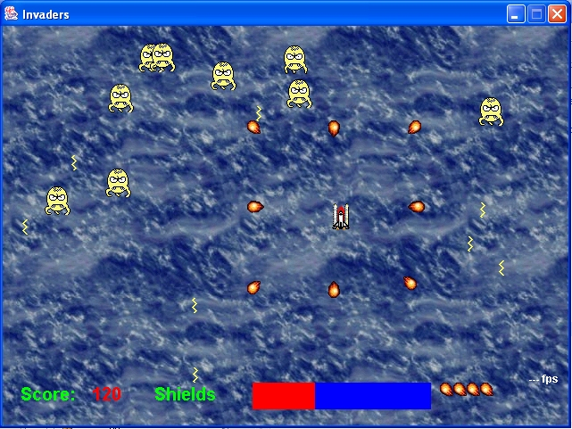

Curso - Programación de un Space Invaders en Java
Descargar juego en .jar

0 - Introducción
1 - La ventana
2 - Cierre debido
3 - Primeros pegotes sobre la ventana
4 - Primeras imágenes
5 - Optimizando la carga de imágenes
6 - Optimizando todavía más la carga de imágenes
7 - Bucle principal
8 - Limpiando la basura
9 - Controlando el caos
10 - Más lento que el ojo
11 - Doble Búfer automático
12 - Medición del rendimiento
13 - Reorganización del código Java
14 - Fotogramas
15 - Fotogramas - II
16 - El Jugador
17 - Controlando el jugador
18 - Disparos
19 - Más disparos - Bombas de fragmentación
20 - Detección de colisiones
21 - Barra de estado
22 - Puntuación
23 - Muriendo
24 - La venganza de los monstruos
25 - Fondo con scroll
26 - Reaparición de monstruos
27 - Sonido sencillo
28 - Corrigiendo los fallos de sonido
29 - Pequeñas optimizaciones
Otros recursos
Space Invaders 101